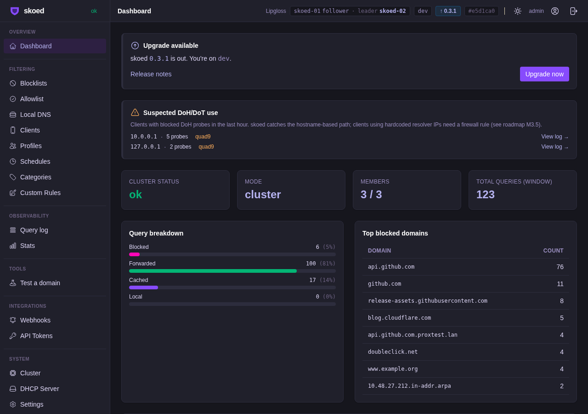

M32
Per-Domain Upstream Routing
Result summary
16
Tests passed
0
Failures
3
Nodes validated
1
Failover tested
Cluster environment
skoed-01
10.0.0.101
role: follower
sync: in_sync
role: follower
sync: in_sync
skoed-02 ★
10.0.0.102
role: leader (post-failover)
sync: in_sync
role: leader (post-failover)
sync: in_sync
skoed-03
10.0.0.103
role: follower (rejoined)
sync: in_sync
role: follower (rejoined)
sync: in_sync
Route CRUD & replication
PASS
3 routes configured via PATCH /api/v1/settings
FS-UpstreamRouteCreate
3 routes
PASS
Routes replicated — skoed-01
FS-UpstreamRouteClusterReplicated
3 routes
PASS
Routes replicated — skoed-02
FS-UpstreamRouteClusterReplicated
3 routes
PASS
Routes replicated — skoed-03
FS-UpstreamRouteClusterReplicated
3 routes
PASS
Shadow YAML persists routes on node restart
upstream_routes:
config.yaml
DNS resolution via routes
PASS
Wildcard *.cloudflare.com → 1.1.1.1 resolves (skoed-01)
FS-UpstreamRouteWildcardResolution
104.18.28.7
PASS
Wildcard *.cloudflare.com → 1.1.1.1 resolves (skoed-02)
FS-UpstreamRouteWildcardResolution
104.18.28.7
PASS
Wildcard *.cloudflare.com → 1.1.1.1 resolves (skoed-03)
FS-UpstreamRouteWildcardResolution
104.18.28.7
PASS
*.example.org → 9.9.9.9 resolves on all 3 nodes
FS-UpstreamRouteWildcardDepth
104.20.26.136
PASS
No-match domain falls through to global upstream
FS-UpstreamRouteNoMatchFallsThrough
github.com → 8.8.8.8
PASS
Top-down priority: wildcard fires before deeper exact match
FS-UpstreamRouteTopDownPriority
route[0] wins
Validation & discovery
PASS
Bare * match rejected with 400
FS-UpstreamRouteInvalidMatchRejected
HTTP 400
PASS
Empty resolvers array rejected with 400
FS-UpstreamRouteEmptyResolversRejected
HTTP 400
PASS
POST /api/v1/settings/discover-upstreams returns suggested_resolvers
FS-UpstreamDiscovery
200 OK
Raft failover
PASS
blog.cloudflare.com still resolves via route after leader killed
104.18.28.7
PASS
Global fallthrough (github.com) resolves after leader killed
140.82.121.3
PASS
New leader elected (skoed-02) within 5s
skoed-02
PASS
Killed node (skoed-03) rejoined, in_sync, routes active
in_sync
Investigation note — cat:doh blocklist
Initial test domains included dns.quad9.net (a DNS provider hostname), which returned NXDOMAIN. Root cause: the active cat:doh blocklist (40 entries) correctly blocks DNS-over-HTTPS and well-known resolver hostnames to prevent clients from bypassing filtering. This is expected behavior. Tests were redesigned to use non-blocked domains (blog.cloudflare.com, www.example.org). Routing and blocklist enforcement are independent and both functioning correctly.
Screenshots

ss-32-01 · Settings → DNS — per-domain routes configured (*.cloudflare.com, blog.cloudflare.com, *.example.org)

ss-32-02 · Cluster — 3/3 in_sync after failover + rejoin

ss-32-03 · Settings — route list detail